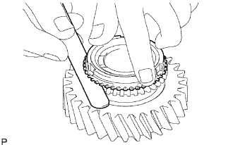
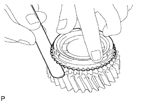
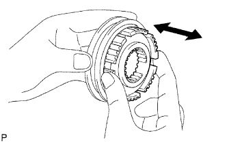

ВЫХОДНОЙ ВАЛ > ПРОВЕРКА |
| 1. INSPECT OUTPUT SHAFT |
Using a micrometer, measure the journal diameter of the output shaft journal surface.
| Item | Specified Condition |
| Journal A | 34.984 to 35.000 mm (1.3774 to 1.3779 in.) |
| Journal B | 37.984 to 38.000 mm (1.4955 to 1.4960 in.) |
| Journal C | 30.384 to 30.400 mm (1.1963 to 1.1968 in.) |
Using a micrometer, measure the flange thickness.
| 2. INSPECT 1ST GEAR BEARING INNER RACE |
Using a micrometer, measure the inner race thickness.
 |
Using a micrometer, measure the outside diameter of the inner race.
| 3. INSPECT NO. 1 SYNCHRONIZER RING (for 1st Gear) |
Coat the 1st gear cone with gear oil.
Check the braking effect of the No. 1 synchronizer ring.
Install the ring to the shaft cone.
Apply pressure to the ring and attempt to turn it in both directions. Check that the ring locks.
|  |
Using a feeler gauge, measure the clearance between the No. 1 synchronizer ring back and 1st gear spline end.
| 4. INSPECT NO. 1 SYNCHRONIZER RING (for 2nd Gear) |
Coat the 2nd gear cone with gear oil.
Check the braking effect of the No. 1 synchronizer ring.
Install the ring to the shaft cone.
Apply pressure to the ring and attempt to turn it in both directions. Check that the ring locks.
|  |
Using a feeler gauge, measure the clearance between the No. 1 synchronizer ring back and 2nd gear spline end.
| 5. INSPECT NO. 2 SYNCHRONIZER RING |
Coat the 3rd gear cone with gear oil.
Check the braking effect of the No. 2 synchronizer ring.
Install the ring to the shaft cone.
Apply pressure to the ring and attempt to turn it in both directions. Check that the ring locks.
 |
Using a feeler gauge, measure the clearance between the No. 2 synchronizer ring back and 3rd gear spline end.
| 6. INSPECT REVERSE GEAR |
 |
Using a vernier caliper, measure the clearance between the reverse gear and No. 1 gear shift fork.
Check that the No. 1 transmission clutch hub and reverse gear slide smoothly.
Check that the splines of the reverse gear are not worn down.
| 7. INSPECT NO. 2 TRANSMISSION HUB SLEEVE |
Using a vernier caliper, measure the No. 2 hub sleeve and No. 2 gear shift fork as shown in the illustration.
|  |
Check the sliding condition between the No. 2 hub sleeve and No. 2 clutch hub.
Check that the splines of the No. 2 transmission hub sleeve are not worn down.
| 8. INSPECT 1ST GEAR |
Using a cylinder gauge, measure the inside diameter of the 1st gear.
| 9. INSPECT 2ND GEAR |
Using a cylinder gauge, measure the inside diameter of the 2nd gear.
| 10. INSPECT 3RD GEAR |
Using a cylinder gauge, measure the inside diameter of the 3rd gear.